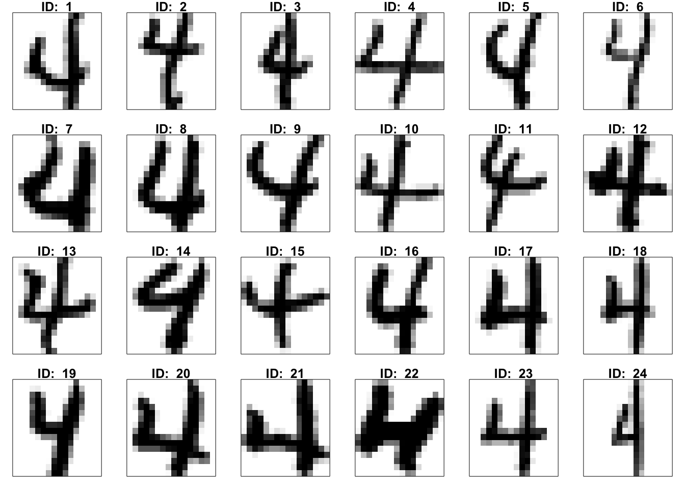
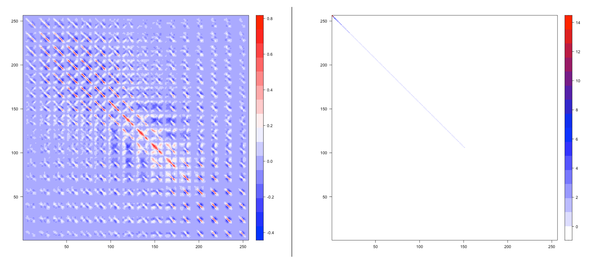
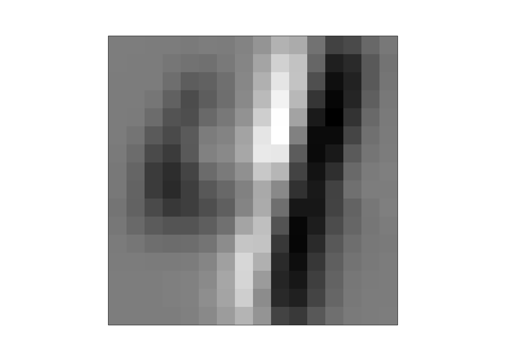
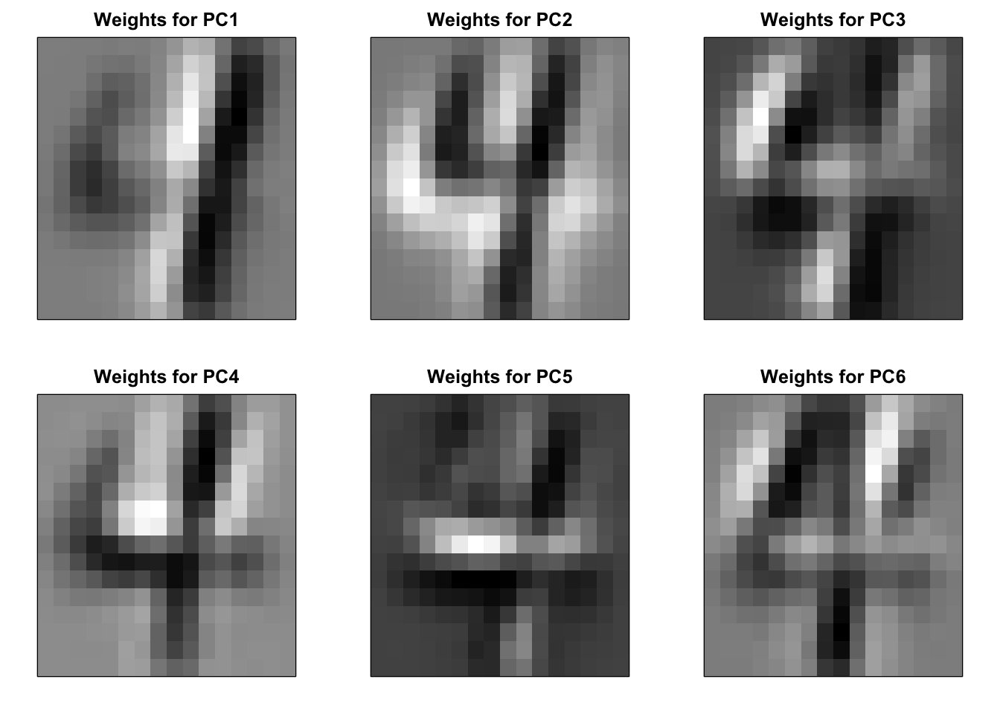
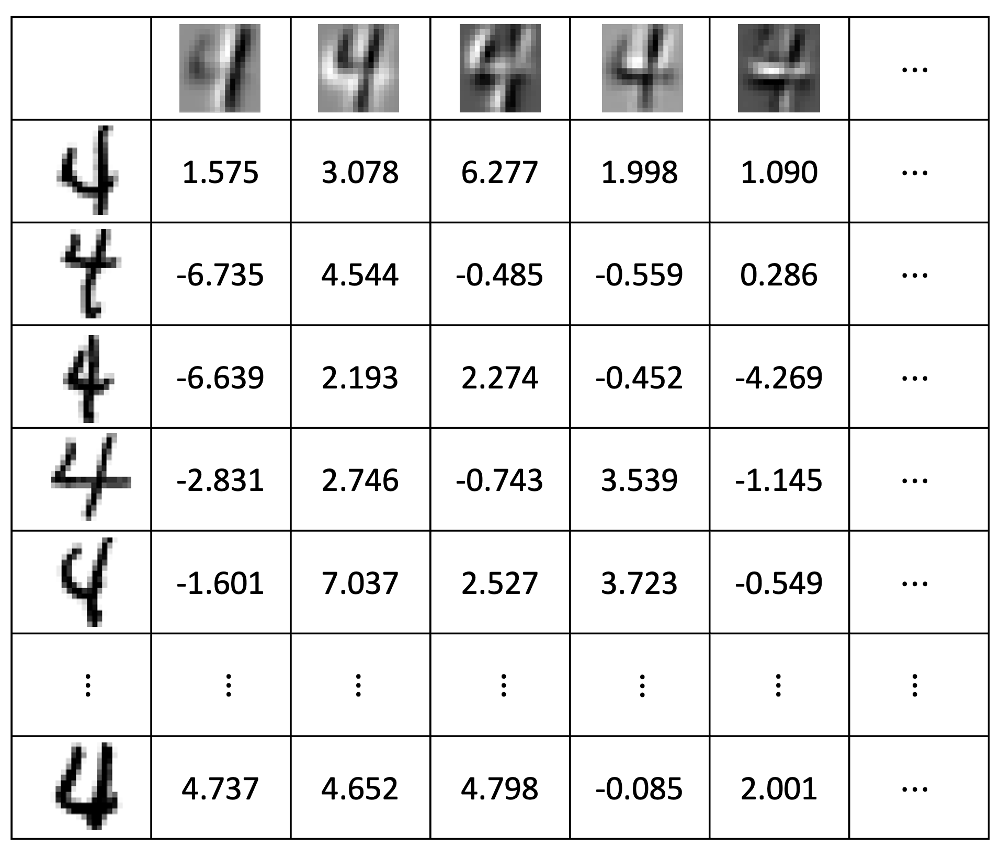
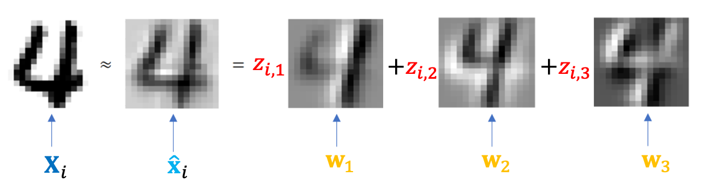
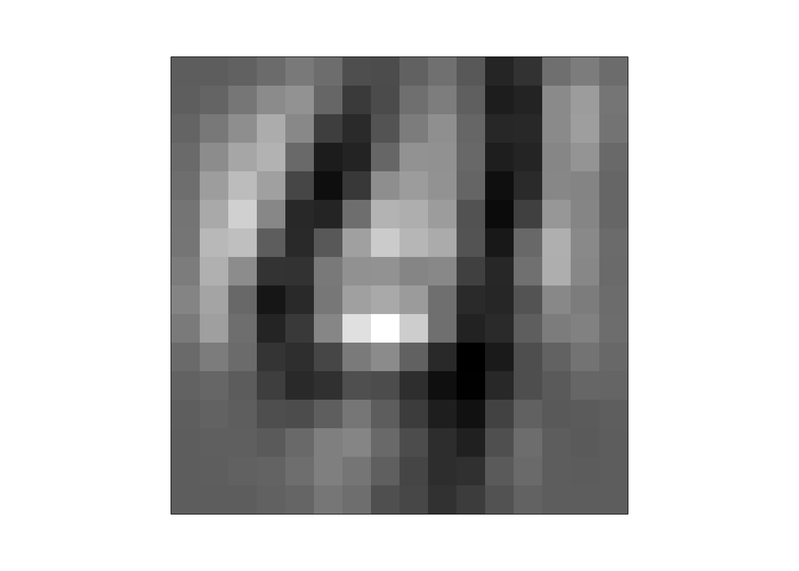
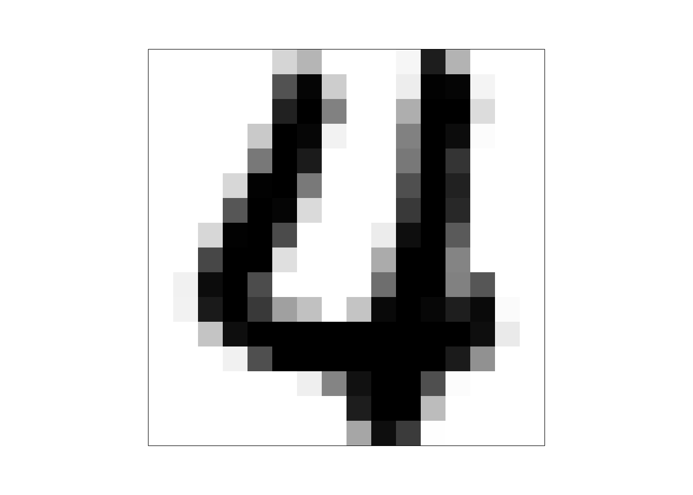
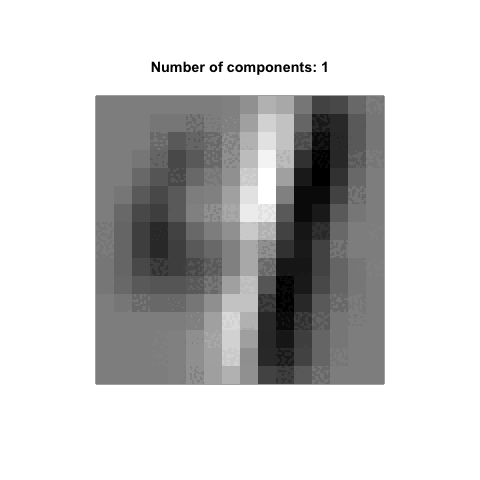
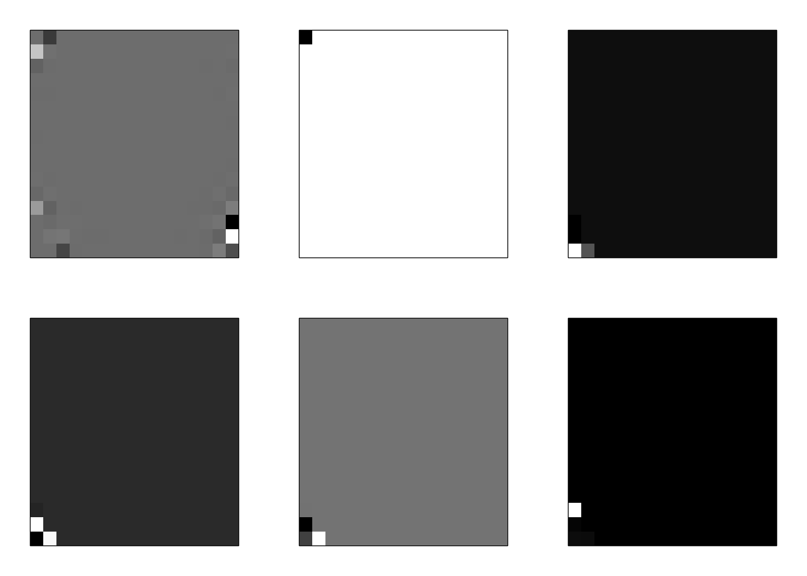

dat = read.table(gzfile("zip.train.gz"))
dat = as.matrix(dat)
dim(dat)[1] 7291 257dat[1, 1:10] V1 V2 V3 V4 V5 V6 V7 V8 V9 V10
6.000 -1.000 -1.000 -1.000 -1.000 -1.000 -1.000 -1.000 -0.631 0.862 In the previous lecture, we introduced the concept of feature extraction, leading to a data-driven feature extraction method—PCA. In this lecture, we will take a deeper look at this algorithm from a different perspective.
Let’s start with a daily life example that will give us another understanding of feature variables.
I have to deal with the recipe leak issue now. You all continue reading!
From now on, I hope you can consciously think of a dataset as a recipe. This will be very helpful for your understanding of dataset.
Let’s go back to the story about the recipe. What is the essence of a recipe? Or rather, what is its main purpose? That’s right—it exists because we want to replicate or reconstruct the work of a culinary master, or perhaps a moment of your own creative inspiration. The key word here is “reconstruct”. Let’s continue looking at the slides to gain a deeper understanding of what “reconstruct” really means.
I hope you’ve learned how to use a recipe! But whatever you do, do NOT try our secret Ummus recipe—because I totally made it up.
Alright, let’s be serious and get back on track. Do you remember the analogy we made earlier between a recipe and a data matrix? When we use a recipe, we are essentially multiplying the values of variables by something related to them and then summing everything together. That is \[ \text{Individual} = X_1\text{'s value} \times X_1\text{related} + \dots + X_p\text{'s value} \times X_p\text{related} \] In other words, an individual can be reconstructed using a weighted sum of somethings associated with those variables and the weights are the variables’ values. Then, what is the thing associated with the variables? Keep this question in your mind! Next, I will use the reconstruction concept of a recipe and a concrete example to give you another perspective on understanding PCA.
Here, we will apply PCA to a larger dataset—the Handwritten Digit (HWD) dataset, a benchmark dataset in machine learning. This example will illustrate and help us grasp a deeper aspect of PCA. This profound idea not only aids in better understanding feature extraction but will also assist us later in quickly comprehending the essence of artificial neural networks and deep learning.
First, let’s introduce HWD dataset. The Handwritten Digit dataset consists of around 7291 images of digits ranging from 0 to 9.
dat = read.table(gzfile("zip.train.gz"))
dat = as.matrix(dat)
dim(dat)[1] 7291 257dat[1, 1:10] V1 V2 V3 V4 V5 V6 V7 V8 V9 V10
6.000 -1.000 -1.000 -1.000 -1.000 -1.000 -1.000 -1.000 -0.631 0.862 As you can see, the HWD dataset has been imported and named dat. This dataset contains 257 variables and 7291 cases (images). The first variable is the number presented by the image, for example, the first row in dat presents number 6. Each image is represented as a 16 by 16 pixel grid, flattened into a vector of 256 values (one for each pixel). Therefore, each row in the dataset corresponds to one such vector, effectively capturing the pixel intensity of a single digit. Next, to achieve better results, we will only focus on all the images that represent the number 4.
X = dat[which(dat[,1] == 4), -1]
y = dat[which(dat[,1] == 4), 1]
dim(X)[1] 652 256By reshaping the 256-dimensional vector back into a 16x16 matrix, the original digit image can be reconstructed and visualized。 As you can see, on the left is the number 4 rendered using the 8th row of X. On the right are the images of the number 4 corresponding to the first 24 rows of X. I don’t know what you think, but I feel the 8th image of the handwritten number 4 looks pretty good, while the others are a bit hard to comment on.

Now, we perform PCA method on the data matrix X of images of my favorite number. As the same as what we did with iris data last time, we will calculate the covariance matrix first and then perform eigenvalues decomposition on it.
S = cov(X)
pca_res = eigen(S)
W = pca_res$vectors
head(pca_res$values, 10) [1] 13.536233 9.838261 8.111957 5.918451 4.211639 3.767007 3.504070
[8] 3.248869 2.781496 2.459582Above, all the PC weights are stored in matrix W, with each column representing a set of PC weights. Additionally, we can see that the information corresponding to the first ten sets of PC weights is automatically arranged in descending order. Let’s calculate the value of the first PC (extracted feature) of the first image X[1,]
sum(X[1,]*W[,1])[1] 1.575447You can calculate all new variables for all images using a two-layered for loop, for example:
Z = X # the new data matrix
for (i in 1:nrow(X)) {
for (j in 1:ncol(X)) {
Z[i, j] = sum(X[i, ]*W[, j])
}
}If you are familiar with matrix computation, the new dataset can be obtained in a single command:
Z = X%*%W
dim(Z)[1] 652 256Z[1:5,1:5] [,1] [,2] [,3] [,4] [,5]
[1,] 1.575447 3.078215 6.2773087 1.9985827 1.0902283
[2,] -6.735149 4.544327 -0.4849858 -0.5599420 0.2861956
[3,] -6.639667 2.193575 2.2740280 -0.4521205 -4.2699895
[4,] -2.831801 2.746806 -0.7435662 3.5391657 -1.1454160
[5,] -1.601569 7.037529 2.5278122 3.7237227 -0.5490663So how do we know if our PCA was successful? We can compare the covariance of the original dataset and the new dataset, as shown in the figure below. On the left, we have the heatmap of the covariance matrix for the original dataset. We can see that the original dataset’s covariance matrix has a complex structure—not only do the variances (information content) of different variables show no obvious differences, but all variables exhibit intricate correlations, making it difficult to make selections. On the right, we see the covariance matrix of the new dataset. Its structure is clear, and the amount of information contained decreases rapidly, making it much easier to choose variables and achieve dimensionality reduction.

Now, let’s focus our attention on matrix W.
dim(W)[1] 256 256As expected, each set of PC weights contains 256 values, which is exactly the number of pixel values in an image. This means that each set of PC weights can also be viewed as an image of the same size as the original images of numbers. So, let’s try placing the first set of PC weights into a \(16\times 16\) matrix and display it as an image to see what happens.

This seems to resemble some abstract form of the digit 4, or perhaps it emphasizes the vertical stroke on the right side of a 4. Interesting, isn’t it? Let’s continue applying the same process and display the first six sets of PC weights.

It seems that each set of PC weights represents an abstract version of the digit 4, emphasizing a specific part of the number. Fascinating!
Now, let’s incorporate this information into our newly obtained dataset.

This is our new dataset Z, where each row represents an image, and each column represents an extracted feature. Wait! Doesn’t this look a lot like our previous recipe data matrix? Can we make the following conjecture: in the problem we mentioned earlier, the things related to variables are actually the weights, and we can treat these weights just like ingredients. In other words, can we reconstruct the images corresponding to numbers by using the recipe method?
We are about to open the door to a new world. Let’s slightly modify the recipe formula mentioned in the first section to fit our digit image recipe.

Next, I will use this formula with the first 30 PC weights to reconstruct the 8th image.


The reconstructed image on the left, though blurry, seems to capture the main features of the real image on the right. But don’t forget, we’ve only added 30 types of “ingredients.” In the animation below, you’ll see that as more “ingredients” are added, the reconstructed image becomes closer and closer to the original. Eventually, when all the “ingredients” in the “recipe” are used, the original digit 4 appears in its full form.
Animation-Demo of PCA Image Reconstruction

From a culinary perspective, perfectly replicating a master chef’s creation is crucial, so you shouldn’t miss any ingredients in the recipe. However, for digit recognition, reconstructing an image identical to the original isn’t actually necessary. In fact, for a computer, having so many pixels might just be an unnecessary burden. Let’s take a look at the last six “ingredients” in the digit image “recipe,” which are the last six sets of PC weights.

This is the principle behind reconstructing images using PC weights. Next, we will use this principle to reinterpret PCA methods. Please note that this way of understanding is crucial for grasping neural networks and even deep learning. Before we continue, let’s take a moment to think about a small question to test our level of understanding.
Quiz: Do you know what these so-called ingredients are called in linear algebra? The original dataset can also be seen as a ‘recipe’. So, what do the ingredients in that ‘recipe’ look like?
Next, I will first use Lego toys to make an analogy for PCA, and then use the Lego example to introduce another interpretation of PCA.
This is the power of feature extraction, and it is especially crucial for computers. For instance, when a computer is tasked with recognizing the content of a photo, using extracted features is far more efficient than relying on raw pixel values. Next, let’s reexamine PCA from the perspective of LEGO.
As a LEGO toy designer, my task is to find a series of LEGO blocks (the “giant blocks”) and, through an “analysis” of the animal’s shape, calculate the required number of each block. This ensures that the assembled animal can roughly capture the important features of the animal’s form.
Through this example, we can easily understand the second formulation of PCA. The PCA problem can be seen as finding a series of weight vectors \(\textbf{w}_j\) to extract features, and then using these weight vectors and the extracted features to reconstruct the image such that the difference between the reconstructed image and the original image is within an acceptable range. This concludes our lecture for today. I hope you have a general understanding of the second interpretation of PCA. In the next lecture, we will discuss it with more precise language and terminology.
This is another interpretation of PCA. Essentially, we have now built the bridge between the first part of the course and deep learning based on neural network models. Let’s head to the lab for some hands-on practice, and we will continue next week.